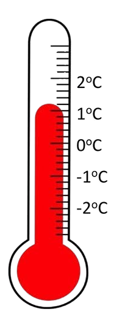
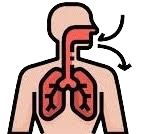
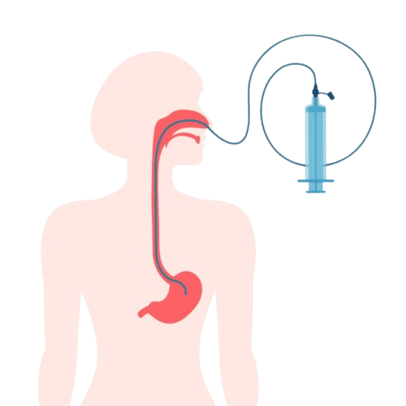
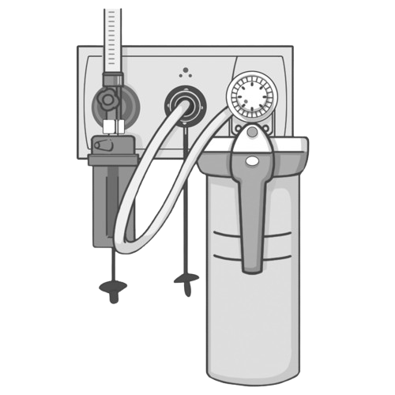
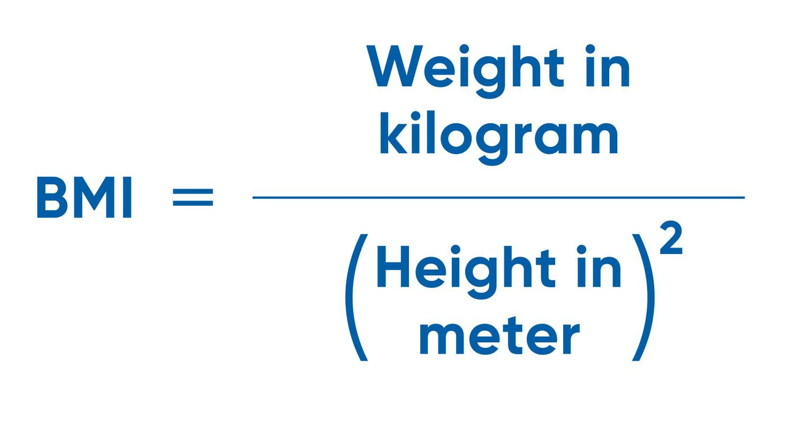

Useful nursing calculations


Choose a year, then a subject, then select a file
Practice with a simplified Al Shifaa training system and learn the main steps students need before using the system in clinical practice.
TRY THE AL SHIFAA TRAINING SYSTEM → SEE ALL GUIDE FOR USING AL SHIFAA SYSTEM →Choose a question to go directly to its explanation in the full guide.
A graduation project created to support nursing students by bringing together procedures, calculations, summaries, and practical training resources in one organized place. Big Love for Nurses ♡